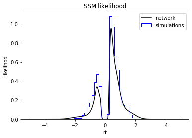

LANfactory


Lightweight python package to help with training LANs (Likelihood approximation networks).
Quick Start
The LANfactory package is a light-weight convenience package for training likelihood approximation networks (LANs) in torch (or keras),
starting from supplied training data.
LANs, although more general in potential scope of applications, were conceived in the context of sequential sampling modeling to account for cognitive processes giving rise to choice and reaction time data in n-alternative forced choice experiments commonly encountered in the cognitive sciences.
In this quick tutorial we will use the ssms package to generate our training data using such a sequential sampling model (SSM). The use is in no way bound to utilize the ssms package.
Install
To install the ssms package type,
pip install git+https://github.com/AlexanderFengler/ssm_simulators
To install the LANfactory package type,
pip install git+https://github.com/AlexanderFengler/LANfactory
Necessary dependency should be installed automatically in the process.
Basic Tutorial
# Load necessary packages
import ssms
import lanfactory
import os
import numpy as np
from copy import deepcopy
import torch
Generate Training Data
First we need to generate some training data. As mentioned above we will do so using the ssms python package, however without delving into a detailed explanation
of this package. Please refer to the [basic ssms tutorial] (https://github.com/AlexanderFengler/ssm_simulators) in case you want to learn more.
# MAKE CONFIGS
# Initialize the generator config (for MLP LANs)
generator_config = deepcopy(ssms.config.data_generator_config['lan']['mlp'])
# Specify generative model (one from the list of included models mentioned above)
generator_config['dgp_list'] = 'angle'
# Specify number of parameter sets to simulate
generator_config['n_parameter_sets'] = 100
# Specify how many samples a simulation run should entail
generator_config['n_samples'] = 1000
# Specify folder in which to save generated data
generator_config['output_folder'] = 'data/lan_mlp/'
# Make model config dict
model_config = ssms.config.model_config['angle']
# MAKE DATA
my_dataset_generator = ssms.dataset_generators.data_generator(generator_config = generator_config,
model_config = model_config)
training_data = my_dataset_generator.generate_data_training_uniform(save = True)
n_cpus used: 6
checking: data/lan_mlp/
simulation round: 1 of 10
simulation round: 2 of 10
simulation round: 3 of 10
simulation round: 4 of 10
simulation round: 5 of 10
simulation round: 6 of 10
simulation round: 7 of 10
simulation round: 8 of 10
simulation round: 9 of 10
simulation round: 10 of 10
Writing to file: data/lan_mlp/training_data_0_nbins_0_n_1000/angle/training_data_angle_ef5b9e0eb76c11eca684acde48001122.pickle
Prepare for Training
Next we set up dataloaders for training with pytorch. The LANfactory uses custom dataloaders, taking into account particularities of the expected training data.
Specifically, we expect to receive a bunch of training data files (the present example generates only one), where each file hosts a large number of training examples.
So we want to define a dataloader which spits out batches from data with a specific training data file, and keeps checking when to load in a new file.
The way this is implemented here, is via the DatasetTorch class in lanfactory.trainers, which inherits from torch.utils.data.Dataset and prespecifies a batch_size. Finally this is supplied to a DataLoader, for which we keep the batch_size argument at 0.
The DatasetTorch class is then called as an iterator via the DataLoader and takes care of batching as well as file loading internally.
You may choose your own way of defining the DataLoader classes, downstream you are simply expected to supply one.
# MAKE DATALOADERS
# List of datafiles (here only one)
folder_ = 'data/lan_mlp/training_data_0_nbins_0_n_1000/angle/'
file_list_ = [folder_ + file_ for file_ in os.listdir(folder_)]
# Training dataset
torch_training_dataset = lanfactory.trainers.DatasetTorch(file_IDs = file_list_,
batch_size = 128)
torch_training_dataloader = torch.utils.data.DataLoader(torch_training_dataset,
shuffle = True,
batch_size = None,
num_workers = 1,
pin_memory = True)
# Validation dataset
torch_validation_dataset = lanfactory.trainers.DatasetTorch(file_IDs = file_list_,
batch_size = 128)
torch_validation_dataloader = torch.utils.data.DataLoader(torch_validation_dataset,
shuffle = True,
batch_size = None,
num_workers = 1,
pin_memory = True)
Now we define two configuration dictionariers,
- The
network_configdictionary defines the architecture and properties of the network - The
train_configdictionary defines properties concerning training hyperparameters
Two examples (which we take as provided by the package, but which you can adjust according to your needs) are provided below.
# SPECIFY NETWORK CONFIGS AND TRAINING CONFIGS
network_config = lanfactory.config.network_configs.network_config_mlp
print('Network config: ')
print(network_config)
train_config = lanfactory.config.network_configs.train_config_mlp
print('Train config: ')
print(train_config)
Network config:
{'layer_types': ['dense', 'dense', 'dense'], 'layer_sizes': [100, 100, 1], 'activations': ['tanh', 'tanh', 'linear'], 'loss': ['huber'], 'callbacks': ['checkpoint', 'earlystopping', 'reducelr']}
Train config:
{'batch_size': 128, 'n_epochs': 10, 'optimizer': 'adam', 'learning_rate': 0.002, 'loss': 'huber', 'save_history': True, 'metrics': [<keras.losses.MeanSquaredError object at 0x12c403d30>, <keras.losses.Huber object at 0x12c1c78e0>], 'callbacks': ['checkpoint', 'earlystopping', 'reducelr']}
We can now load a network, and save the configuration files for convenience.
# LOAD NETWORK
net = lanfactory.trainers.TorchMLP(network_config = deepcopy(network_config),
input_shape = torch_training_dataset.input_dim,
save_folder = '/data/torch_models/',
generative_model_id = 'angle')
# SAVE CONFIGS
lanfactory.utils.save_configs(model_id = net.model_id + '_torch_',
save_folder = 'data/torch_models/angle/',
network_config = network_config,
train_config = train_config,
allow_abs_path_folder_generation = True)
To finally train the network we supply our network, the dataloaders and training config to the ModelTrainerTorchMLP class, from lanfactory.trainers.
Epoch took 0 / 10, took 11.54538607597351 seconds
epoch 0 / 10, validation_loss: 0.3431
Epoch took 1 / 10, took 13.032279014587402 seconds
epoch 1 / 10, validation_loss: 0.2732
Epoch took 2 / 10, took 12.421074867248535 seconds
epoch 2 / 10, validation_loss: 0.1941
Epoch took 3 / 10, took 12.097641229629517 seconds
epoch 3 / 10, validation_loss: 0.2028
Epoch took 4 / 10, took 12.030233144760132 seconds
epoch 4 / 10, validation_loss: 0.184
Epoch took 5 / 10, took 12.695374011993408 seconds
epoch 5 / 10, validation_loss: 0.1433
Epoch took 6 / 10, took 12.177874326705933 seconds
epoch 6 / 10, validation_loss: 0.1115
Epoch took 7 / 10, took 11.908828258514404 seconds
epoch 7 / 10, validation_loss: 0.1084
Epoch took 8 / 10, took 12.066670179367065 seconds
epoch 8 / 10, validation_loss: 0.0864
Epoch took 9 / 10, took 12.37562108039856 seconds
epoch 9 / 10, validation_loss: 0.07484
Saving training history
Saving model state dict
Training finished successfully...
Load Model for Inference and Call
The LANfactory provides some convenience functions to use networks for inference after training.
We can load a model using the LoadTorchMLPInfer class, which then allows us to run fast inference via either
a direct call, which expects a torch.tensor as input, or the predict_on_batch method, which expects a numpy.array
of dtype, np.float32.
network_path_list = os.listdir('data/torch_models/angle')
network_file_path = ['data/torch_models/angle/' + file_ for file_ in network_path_list if 'state_dict' in file_][0]
network = lanfactory.trainers.LoadTorchMLPInfer(model_file_path = network_file_path,
network_config = network_config,
input_dim = torch_training_dataset.input_dim)
# Two ways to call the network
# Direct call --> need tensor input
direct_out = network(torch.from_numpy(np.array([1, 1.5, 0.5, 1.0, 0.1, 0.65, 1], dtype = np.float32)))
print('direct call out: ', direct_out)
# predict_on_batch method
predict_on_batch_out = network.predict_on_batch(np.array([1, 1.5, 0.5, 1.0, 0.1, 0.65, 1], dtype = np.float32))
print('predict_on_batch out: ', predict_on_batch_out)
direct call out: tensor([-16.4997])
predict_on_batch out: [-16.499687]
A peek into the first passage distribution computed by the network
We can compare the learned likelihood function in our network with simulation data from the underlying generative model.
For this purpose we recruit the ssms package again.
import pandas as pd
import matplotlib.pyplot as plt
data = pd.DataFrame(np.zeros((2000, 7), dtype = np.float32), columns = ['v', 'a', 'z', 't', 'theta', 'rt', 'choice'])
data['v'] = 0.5
data['a'] = 0.75
data['z'] = 0.5
data['t'] = 0.2
data['theta'] = 0.1
data['rt'].iloc[:1000] = np.linspace(5, 0, 1000)
data['rt'].iloc[1000:] = np.linspace(0, 5, 1000)
data['choice'].iloc[:1000] = -1
data['choice'].iloc[1000:] = 1
# Network predictions
predict_on_batch_out = network.predict_on_batch(data.values.astype(np.float32))
# Simulations
from ssms.basic_simulators import simulator
sim_out = simulator(model = 'angle',
theta = data.values[0, :-2],
n_samples = 2000)
# Plot network predictions
plt.plot(data['rt'] * data['choice'], np.exp(predict_on_batch_out), color = 'black', label = 'network')
# Plot simulations
plt.hist(sim_out['rts'] * sim_out['choices'], bins = 30, histtype = 'step', label = 'simulations', color = 'blue', density = True)
plt.legend()
plt.title('SSM likelihood')
plt.xlabel('rt')
plt.ylabel('likelihod')
Text(0, 0.5, 'likelihod')

TorchMLP to ONNX Converter
The transform_onnx.py script converts a TorchMLP model to the ONNX format. It takes a network configuration file (in pickle format), a state dictionary file (Torch model weights), the size of the input tensor, and the desired output ONNX file path.
Usage
python onnx/transform_onnx.py <network_config_file> <state_dict_file> <input_shape> <output_onnx_file>
Replace the placeholders with the appropriate values:
: Path to the pickle file containing the network configuration. : Path to the file containing the state dictionary of the model. : The size of the input tensor for the model (integer). : Path to the output ONNX file.
For example:
python onnx/transform_onnx.py '0d9f0e94175b11eca9e93cecef057438_lca_no_bias_4_torch__network_config.pickle' '0d9f0e94175b11eca9e93cecef057438_lca_no_bias_4_torch_state_dict.pt' 11 'lca_no_bias_4_torch.onnx'
HSSM package.
We hope this package may be helpful in case you attempt to train LANs for your own research.